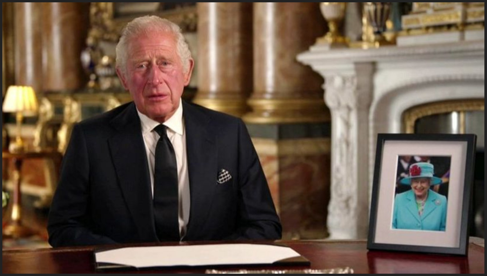

'Elizabeth, Queen of Scots'

Scotland's First Minister Nicola Sturgeon has described the Queen as an inspiration in an entry in a book of condolence at her official residence in Edinburgh:
"On behalf of Scotland, I express deep sorrow on the passing of Her Majesty, Queen Elizabeth, and also the gratitude of our nation for her steadfast service, dedication and abiding love of Scotland.
"In so many ways, and for so many of us, she was Elizabeth, Queen of Scots. "Personally, I will cherish and value for the rest of my life the words of wisdom and counsel I was so privileged to receive during the audiences she graciously afforded. "In our sadness, we will continue to be guided by her example and inspiration. Thank you, Ma'am, may you rest in peace."